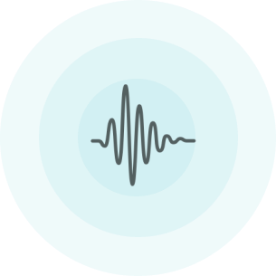

<ons-page>
  <style>
    #btn-voice {
      width: 90%;
      transform: translateX(-50%);
      position: absolute;
      left: 50%;
      bottom: 3%;
      margin-top: 100px;
      display: inline-block;
    }
  </style>


  <ons-toolbar>
    <div class="left"><ons-back-button></ons-back-button></div>
    <div class="center">Test 3</div>
  </ons-toolbar>

  <div class="test_2" style="margin: 0 auto; display: block; width: 90%">
    <h1>Test 3:<br />Voice</h1>
    <p>
      Should you require build tools, they are included for developing.
    </p>

    
    <ons-button id="btn-voice">Record</ons-button>
  </div>

  <script>
    function toResult() {
      document.getElementById('appNavigator').pushPage('result.html', {animation: 'slide'})
    }

    var btn = document.getElementById("btn-voice");
    var count = 0;
    btn.addEventListener("click", () => {
      console.log('take picture and send to server for analysis')
      btn.innerHTML = "Continue"
      if (count >= 1) {
        toResult();
      }
      ++count;
    });
  </script>
</ons-page>